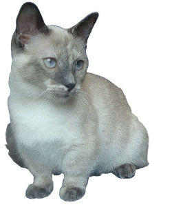

The Munchkin is a relatively new breed of cat characterized by its very short legs, which are caused by a naturally occurring genetic mutation. Much controversy erupted over the breed when it was recognized by The International Cat Association in 1995 with critics voicing concern over potential health and mobility issues.
Short-legged cats have been documented a number of times around the world since the 1940s. A British veterinary report in 1944 noted four generations of healthy short-legged cats which were similar to normal cats except for the length of the legs. This line disappeared during the Second World War but other short-legged cats were spotted in Russia during 1956 and the United States in the 1970s.[1] In Russia the cat earned the nickname "Stalingrad Kangaroo cat".[citation needed]
In 1983 Sandra Hochenedel, a music teacher in Louisiana, found two pregnant cats who had been chased by a bulldog under a truck. She kept one of the cats and named her Blackberry and half of her kittens were born short-legged. Hochenedel gave a short-legged male kitten from one of Blackberry's litters to a friend, Kay LaFrance, and she named the kitten Toulouse. It is from Blackberry and Toulouse that today's Munchkin breed is descended.[2]
Toulouse was an unneutered cat with outdoor access and after some time a population of stray short-legged cats started to form. Thinking that they might have a new breed, Hochenedel and LaFrance contacted Dr. Solveig Pflueger, a show judge, chairperson of The International Cat Association's (TICA) genetics committee and advisor to the Board of Directors. Together with Dr. David Biller, Head of Radiology at the College of Veterinary Medicine at Kansas State University, Pflueger conducted studies on the cats and determined that the short-legged trait has an autosomal dominant mode of inheritance and that the cats did not appear to have any spinal problems associated with those found in short-legged dog breeds such as the Corgi and Dachshund.[3]
The Munchkin cat was first introduced to the general public in 1991 via a national network televised cat show held by The International Cat Association (TICA) in Madison Square Garden.[3] Critics predicted that the breed would develop back, hip and leg problems similar to those that plague some Dachshunds.[4] Amidst much controversy, the Munchkin was proposed as a new breed by foundation breeders Laurie Bobskill and Robert Bobskill of Massachusetts and accepted by TICA into its New Breed development program in September 1994. One veteran show judge resigned in protest, calling the breed an affront to breeders with ethics.[2] The Munchkin achieved TICA Championship status in May 2003.[1]
Apart from TICA, registries that recognize the breed includes The American Association of Cat Enthusiasts (AACE), The United Feline Organization (UFO), the Southern Africa Cat Council,[5] and the Waratah National Cat Alliance in Australia.[6] There is controversy among breeders of pedigree cats as to what genetic mutations are abnormal and potentially disadvantageous to the cat.[7] Several cat registries do not recognize the Munchkin: Fédération Internationale Féline, which refuses to recognise what they consider a breed based on a "genetic disease", achondroplasia.[8] The Governing Council of the Cat Fancy likewise refuses to recognise the breed, considering this breed and others like it to be "unacceptable" because they are based on an "abnormal structure or development".[9] The breed is also not recognized by the Cat Fanciers' Association.[10] The Australian Capital Territory (a territory of Australia) government consider the munchkin breed to be "malformed animals" and the deliberate breeding of them "unacceptable" because of the "genetic health problems associated with such breeding".[11] Owners and Breeders of munchkins declare them to be "a sound breed" that is "ideal" for small homes and not particularly susceptible to health problems.[6]
In 2014, Lilieput, a Munchkin cat from Napa, California, was named the shortest living cat in the world by Guinness World Records. She stands 5.25 inches (13.34 centimeters) tall.[12]
References:
This article uses material from the Wikipedia article ”Munchkin", which is released under the Creative Commons Attribution-Share-Alike License 3.0.
Picture: By Desaix83, d'après le travail de Sg0668commons [CC BY 3.0 (http://creativecommons.org/licenses/by/3.0)], via Wikimedia Commons